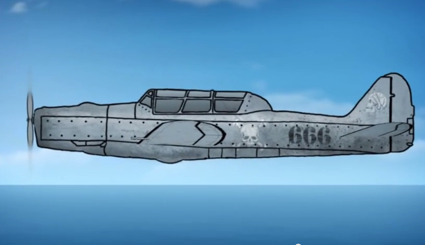

-

Experimenting with texture and animation, I created this video to help Green Living Science promote environmental awareness.
-

To portray the history of the wheel, I used a chroma keyed greenscreen to blend stop-motion animation with 2D computer animation.
-

This is just a short looping animation playing with the idea of trying to use After Effects to create the look of a three dimensional object using just 3 images of an airplane that I drew in photoshop.
-

Here is another piece that I made to help Green Living Science promote environmental awareness and recycling. This was also my first real attempt at a full on 3D animation (excluding the 2D intro, of course!)
-

This a claymation video that I made in 2010 at the Cranbrook school of art, experimenting with light and color.